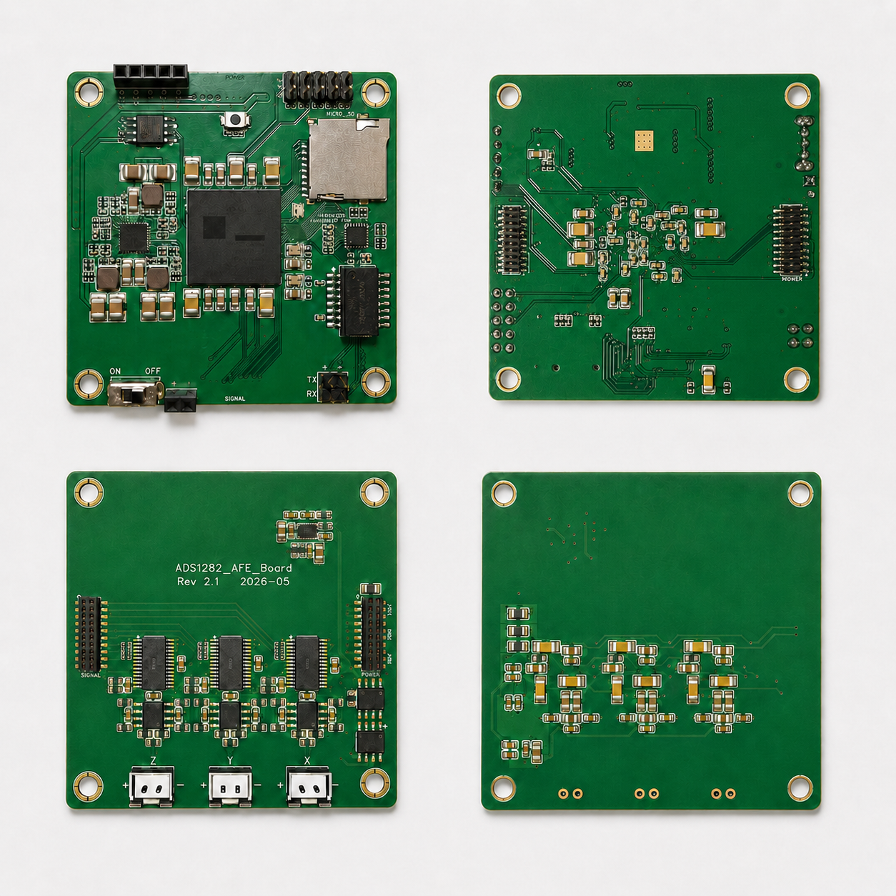
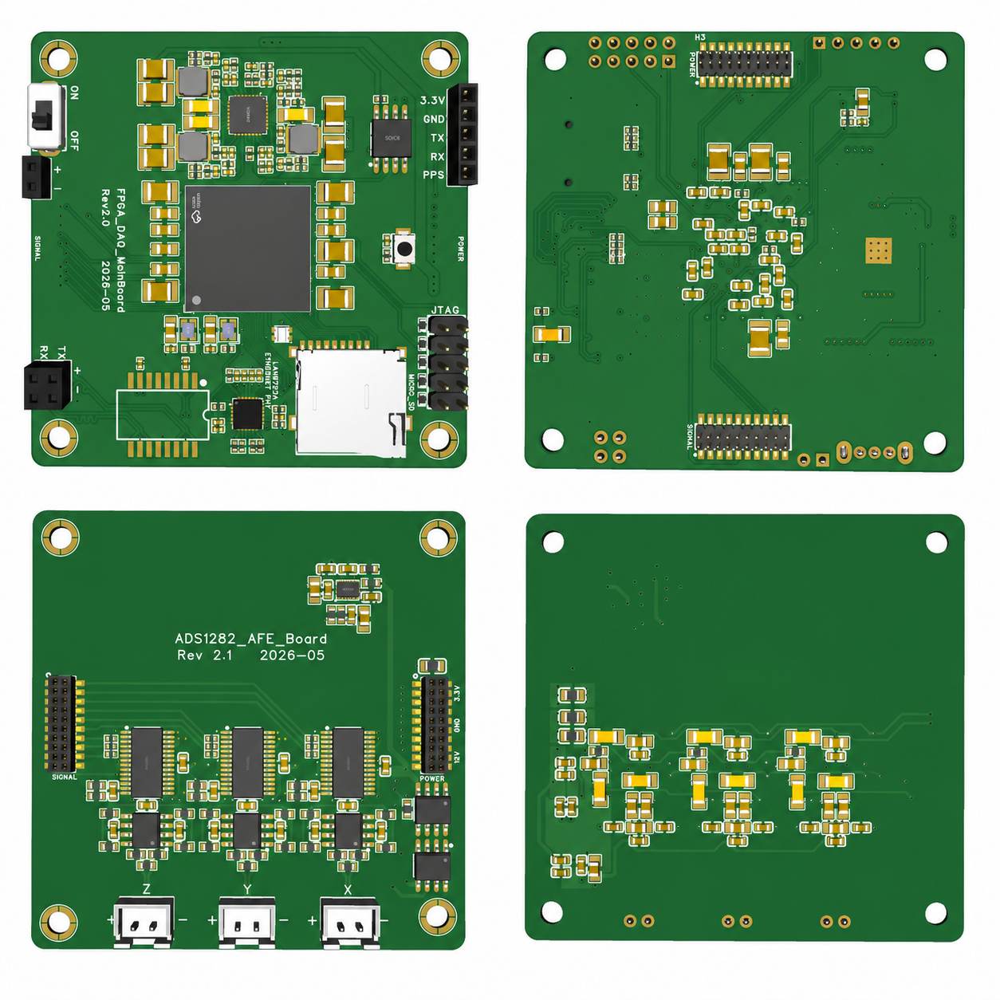
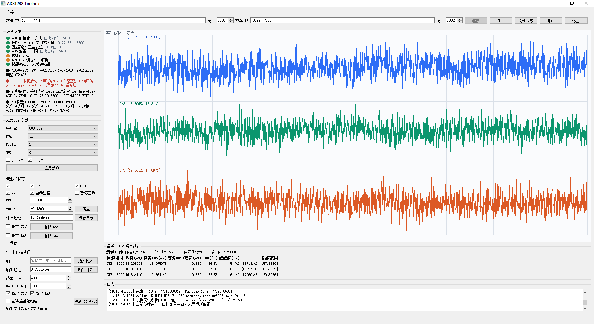
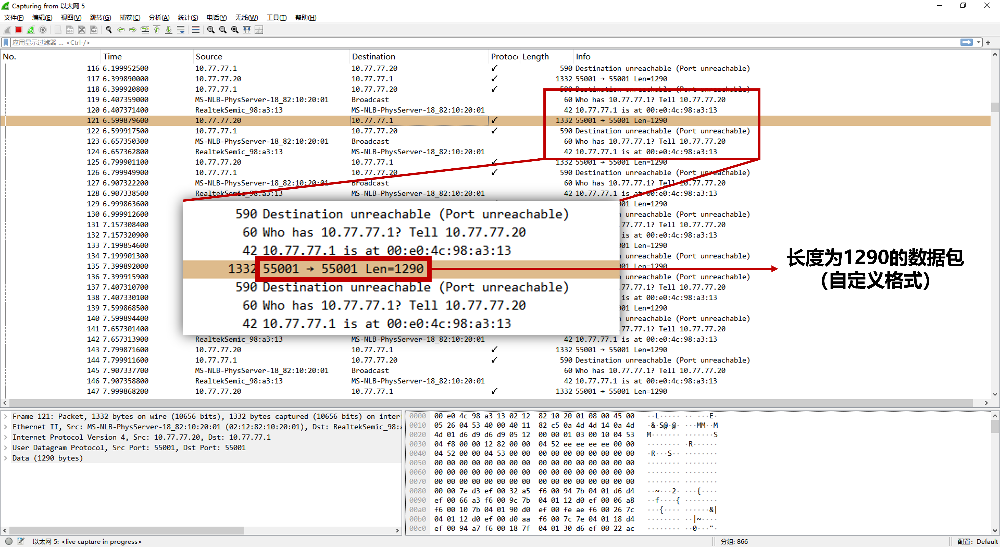
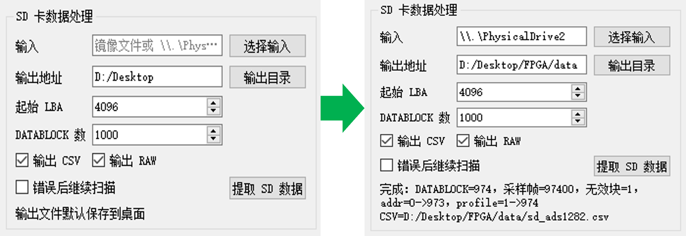

项目概览
系统以 FPGA 为实时核心，控制三路高精度 ADC 同步采集，将采样结果组织成固定长度数据块，并同时支持局域网 UDP 实时传输和 SD 卡本地记录。PC 桌面软件用于状态观察、参数配置、实时波形、真实 RMS、等效 RMS 噪声、SNR 和数据保存。
这个项目覆盖硬件接口联调、RTL 架构设计、跨时钟域处理、网络链路、SD 存储、桌面软件和上板问题定位。

系统实物展示图
项目亮点
3 路
同步高精度采集
FPGA 统一控制三路 ADC，关注同步边界、配置回读和异常上报。
双路径
实时传输 + 本地记录
UDP 实时链路和 SD 记录链路并行工作，SD 异常不阻塞核心采集。
可视化
桌面软件闭环
集成状态、参数、波形、噪声、SNR、实时保存和 SD 数据处理。
系统数据链路
三路 ADC
FPGA 同步采集
数据块组织与缓存
UDP / SD 双路径
PC 软件分析
公开版只展示功能层次，不展示完整数据块字节布局、命令编号和状态字段。
硬件形态

板卡 3D 模型

两板装配 3D 示意

两板装配实物
PC 软件与测试结果

桌面软件：状态、波形、噪声、SNR 和保存

网络联调：实时链路状态与数据接收

SD 数据处理：离线提取和结果保存
能力拆解
单板硬件能力
时钟复位 ADC 接口 以太网 PHY SD 卡 仪器调试- 按电源、复位、时钟、接口、协议分层定位问题。
- 用示波器、抓包和软件状态互相印证。
- 把硬件异常转化为可观察的状态和错误事件。
FPGA 工程能力
RTL 架构 CDC UDP 缓存 资源优化- 采集、缓存、传输、记录和诊断分层设计。
- 跨时钟域用 FIFO 和同步器隔离。
- 在小容量 FPGA 上优化 BRAM 和 FIFO 使用。
测试与调试闭环
| 问题类型 | 定位方法 | 工程价值 |
|---|---|---|
| 网络不通 | 从 PHY 复位、参考时钟、RMII 活动、ARP 到 UDP 应用层逐级排查。 | 体现板级接口和协议分层能力。 |
| ADC 同步异常 | 结合配置回读、数据就绪、同步信号和软件状态定位。 | 体现高精度采集链路设计能力。 |
| SD 写入失败 | 区分初始化成功和写入成功，关注写入响应和忙状态释放。 | 体现外设协议调试能力。 |
| 资源接近上限 | 识别 BRAM 瓶颈，优化 FIFO 深度和缓存实现方式。 | 体现工程化取舍能力。 |
个人贡献
- 梳理板级接口和顶层约束，完成 FPGA 顶层集成。
- 实现三通道 ADC 采集控制、数据组织、网络发送、SD 记录和状态诊断。
- 开发 PC 桌面软件，实现波形显示、参数配置、噪声统计、SNR 和数据保存。
- 通过仿真、综合、示波器、网络抓包和上板长时间测试完成问题定位与迭代。